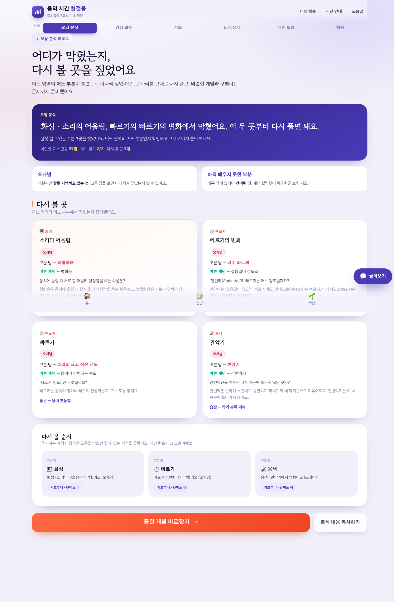

오답은 '틀린 점수'가 아니라 '틀린 규칙'의 흔적으로 읽습니다
같은 '오답'이라도 그 안에는 다른 이유가 있습니다 — 리포트는 그 이유를 가리킵니다.
Hattie & Timperley · 과제 수준 피드백

종합 점수가 아닌 7요소 단위로 잘한 곳과 막힌 곳을 나눕니다
리듬·가락·화성·형식·셈여림·빠르기·음색. 어디가 비고 어디가 채워졌는지 한눈에 보입니다.
용어 혼동형 · 절차 계산형 · 국악 용어 약함 · 구조 파악 미흡 · 소리 구분 미흡 · 악보 문해력 · 악기 분류 미숙 — 7종.
'오개념'과 '아직 배우지 않은 부분'을 구분
'모름'과 '틀림'은 다른 처치를 요구합니다 — 그래야 다음 화면이 달라집니다.